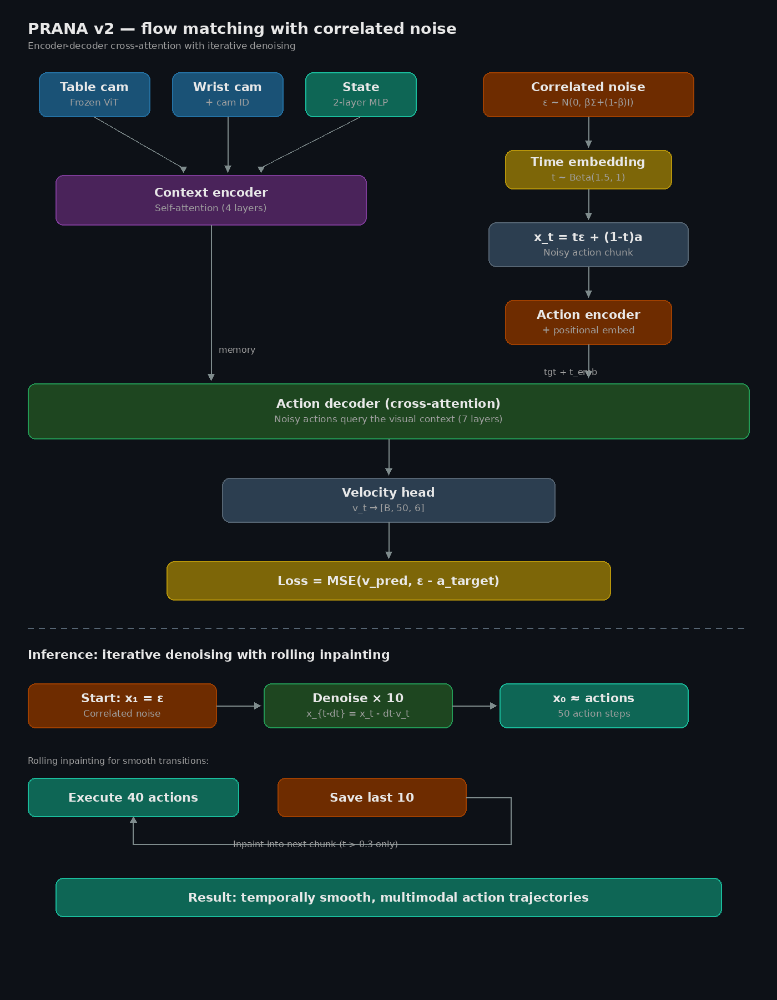
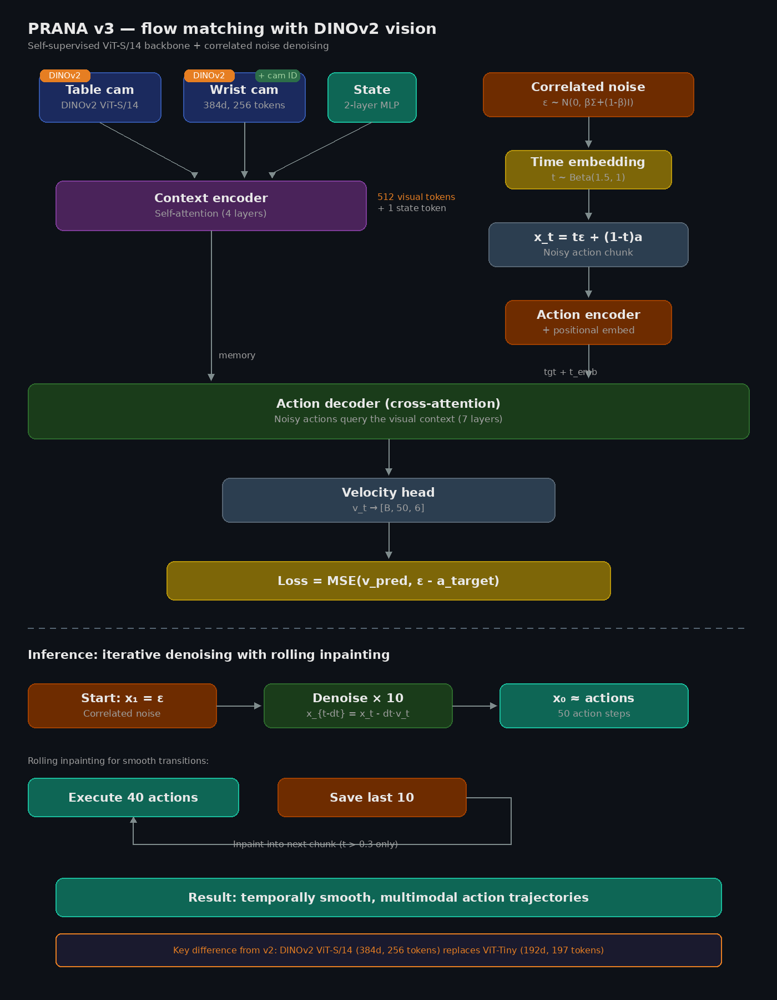

From a deterministic baseline that barely reached the screwdriver, to a flow-matching policy with correlated noise that picks it up and places it in the box. Built on a $300 arm with one laptop GPU.
Each version fixed the failures of the last. v1 taught me what doesn't work. v2 introduced the right inductive biases. v3 upgraded the eyes.
83 teleoperation episodes. ViT-Tiny vision encoder, PaliGemma tokenizer (receiving zeros), 4-layer self-attention transformer, 50-step action chunking with L1 loss. It reached for the screwdriver but couldn't grasp consistently.
The failures were instructive: self-attention let action queries contaminate each other before seeing the scene. Deterministic regression averaged out the multimodal demonstrations. The unfrozen backbone overfitted in 2000 steps.
Instead of predicting one average trajectory, the model starts from noise shaped like real robot motions and iteratively refines it into precise actions. Cross-attention so the decoder actually looks at the scene before deciding what to do.

DINOv2 ViT-S/14 replaces ViT-Tiny. Self-supervised pretraining on 142M images means the backbone encodes where objects are spatially, not just what class they are. 384-dimensional embeddings, 256 tokens per camera — 2.6x more visual information.

Architecture, training scripts, deployment code, model weights, dataset, and the mistakes along the way.